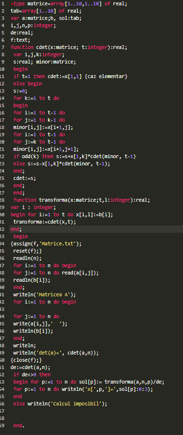

Partea Teoretica
- Sistemul:
- Matricea:

Programul de calcul al determinantilor
- Programul in Pascal:
- Rezultatul progamului in Pascal:
Calcul prin metoda Cramer
- Programul in Pascal
 - Rezultatul progamului in Pascal:
Calcul prin metoda Gauss
- Programul in Pascal:
- Rezultatul progamului in Pascal: